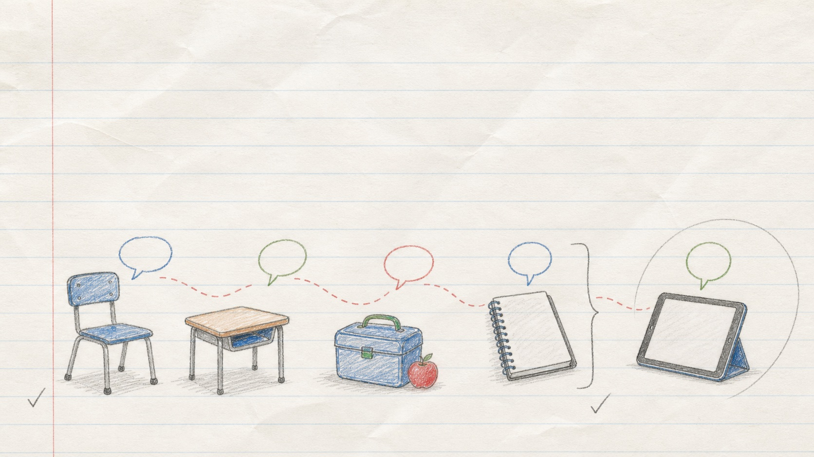

Week 4
A whole-school habit
Children may speak to any adult they trust. A shared culture grows when different adults notice, listen and pass on concerns through the same safeguarding route.
Week 3 practised what one adult could say in one moment. Week 4 looks at how those moments add up across classrooms, corridors, the playground, the office and leadership conversations.

Choose your context
Where do you notice children’s online lives?
Choose the role or context closest to your day. This is only used to suggest habits on this page. It is not sent or stored by the website.
Choose one option to see three small habits.
Closest context
Classroom teacher
Choose one habit that could fit the teaching day.
Closest context
Teaching assistant or support staff
Choose one habit that could fit a trusted conversation.
Closest context
Lunchtime or playground staff
Choose one habit that could fit less formal moments.
Closest context
Office or admin staff
Choose one habit that could fit contact with families.
Closest context
School leader
Choose one habit that could strengthen the shared culture.
Closest context
Other trusted adult
Choose one habit and adapt it to your part of the day.
This habit is small, tied to a real part of your role and easy to repeat. You are helping a child reach the safeguarding system through an adult they trust, not taking over the DSL’s role.
Checkpoint
When a small opening becomes a concern
A pupil says, “I blocked someone, but they made another account and sent another message.” You ask what happened. The pupil says the person asked for a photo and told them not to tell anyone.
What should the adult do next?
Remember: curiosity opened the door. Once a safeguarding concern appeared, the adult’s job changed: listen, reassure and follow the school’s procedure.
Make it practical
My small action
Choose one online safety conversation habit you could repeat this week.
My role or context
Choose a role or context above.
Keep it specific enough to try once. Do not include a child’s name, details of a concern or any confidential information.
Add one small habit before saving your plan.
Your plan will appear here
Choose a role and habit, or write your own small action.
Your role and action stay on this page. The website does not save them. The email option opens a draft in your own email app; the website does not send the email or store your action plan.
Four-week sequence
One habit, repeated
Try the action once this week. If an online-life concern appears, listen and use your school’s safeguarding route.
Return to the overview